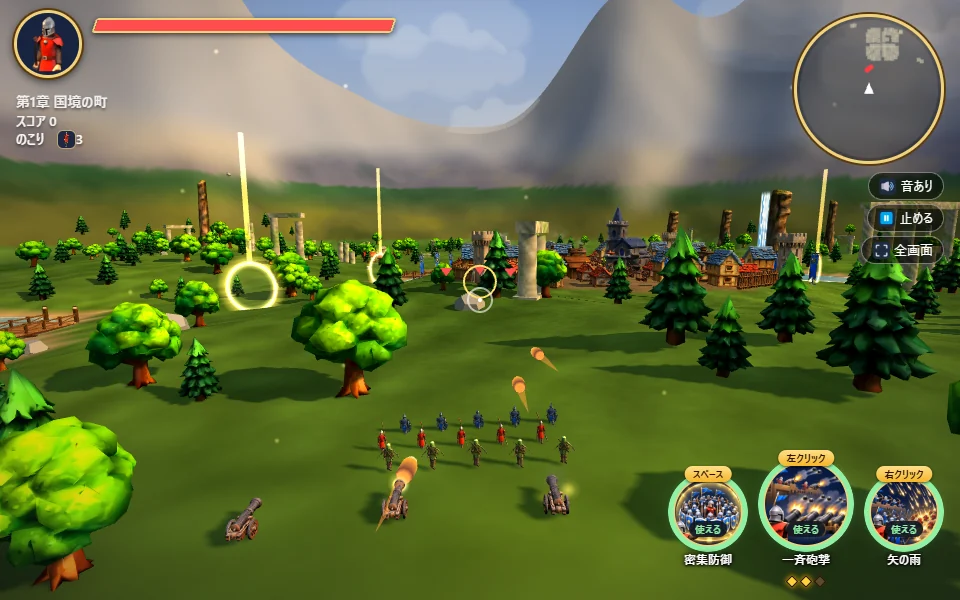
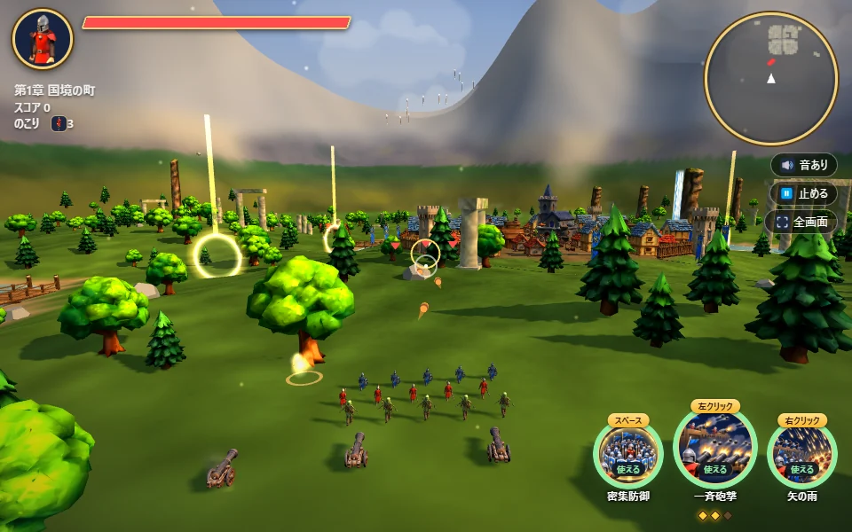
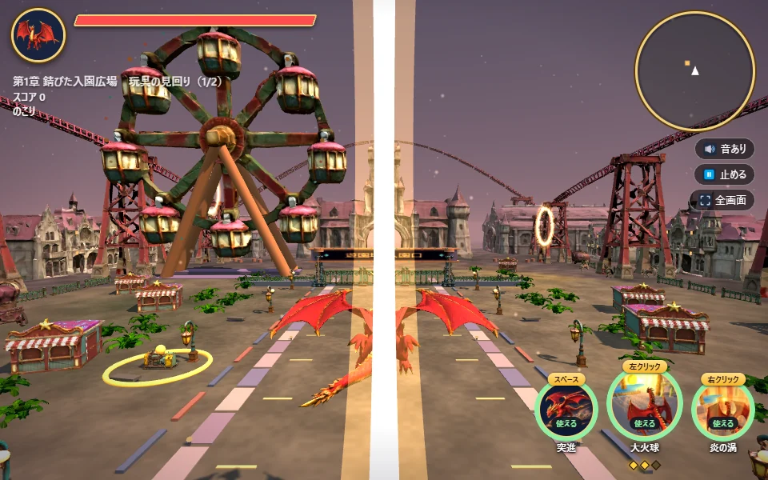
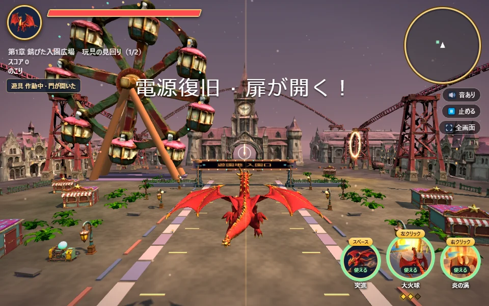
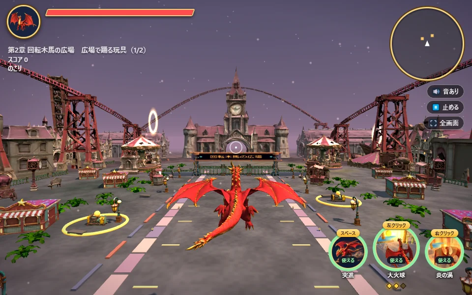
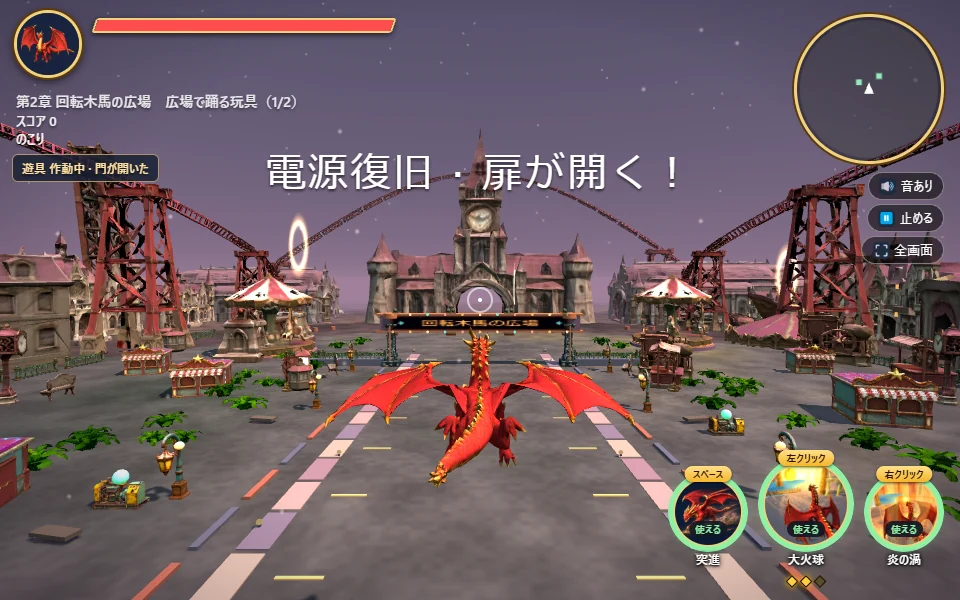
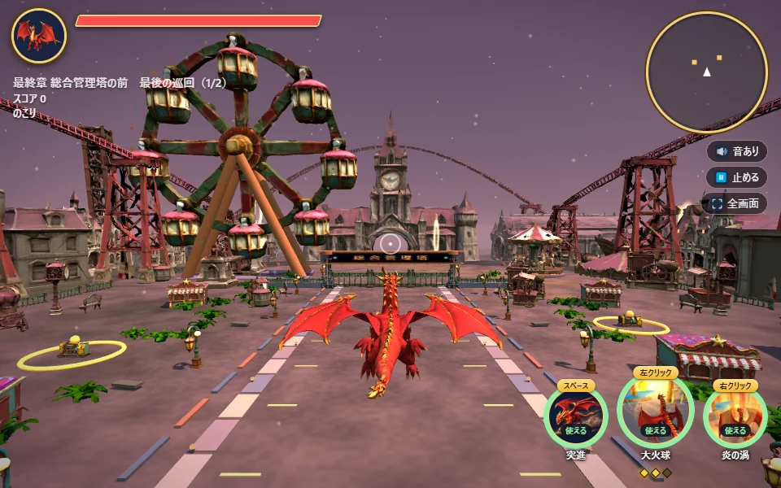
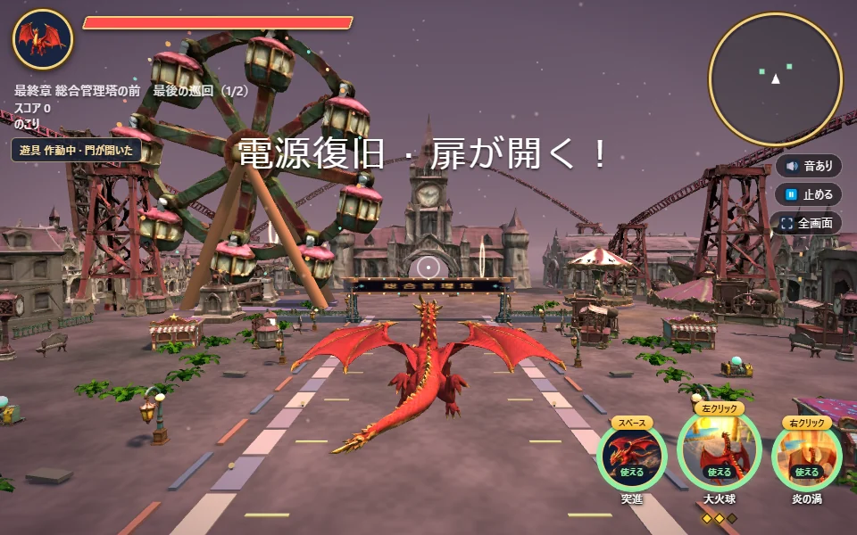
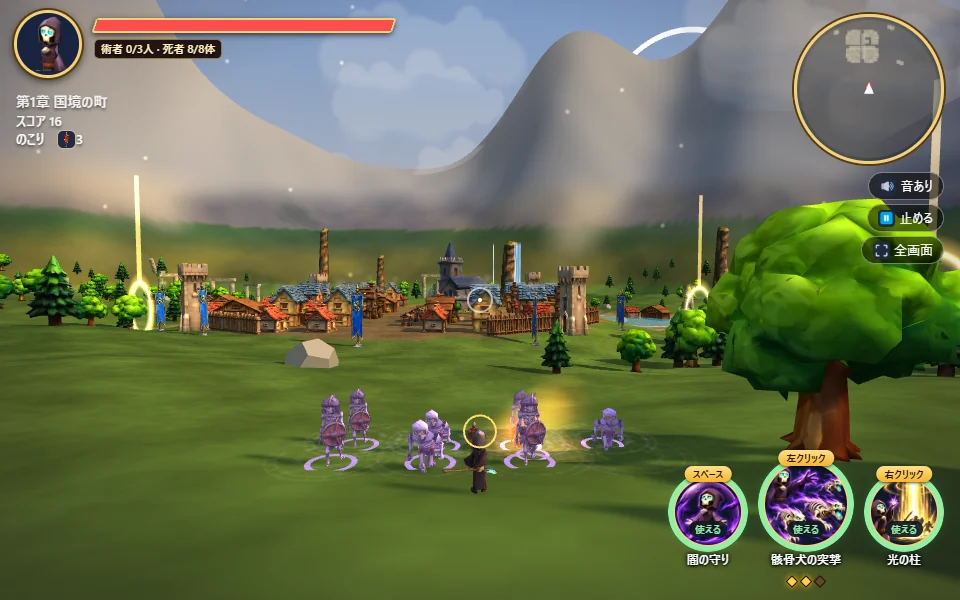
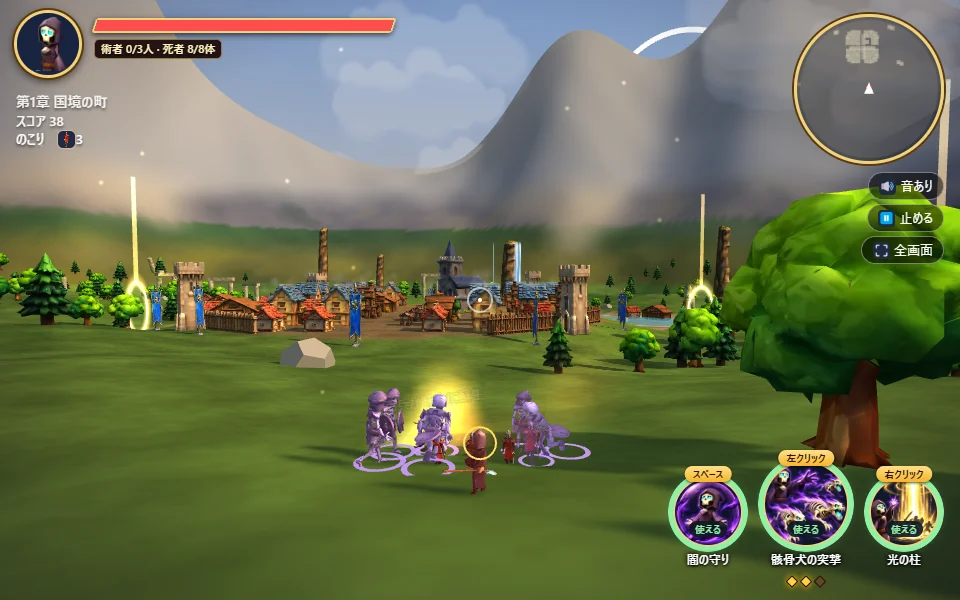

目次
初心者モード
体力が減りすぎる前に立て直せるよう、被弾・回復・敵の体力と待ち時間を調整。固定の所要時間表記を外しました。
同じルールの自動入力で各条件1回。紙芝居は画面のボタンで飛ばし、ボスの掛け合いは流した。最終版の王国編3章は7分44.4秒でクリア。
最終版は7分44秒でクリア。6分の目標は未達です。最低体力は旧版の約30%から約57%へ改善しました。旧版の必殺待ちは0.8秒、最終版は6秒です。
通し試験での最低体力
最大体力に対する割合
前後比較・測れた区間
本編第1章・レッドドラゴン
王国編第1章・ゴーレム
王国編3章・レッドドラゴン・必殺待ち0.8秒同士
王国編3章・レッドドラゴン・最終の必殺待ち6秒
| 測定区間 | 結果と範囲 | 計測根拠 |
|---|---|---|
| 本編第1章・レッドドラゴン | 旧・調整途中ともにクリア | walkthrough_cautious_fixed.json |
| 王国編第1章・ゴーレム | 旧・調整途中ともにクリア | walkthrough_cautious_fixed.json |
| 王国編3章・レッドドラゴン・必殺待ち0.8秒同士 | 調整途中の診断結果。最終版と区別。 | walkthrough_kingdom.json |
| 王国編3章・レッドドラゴン・最終の必殺待ち6秒 | クリア。終了時の体力 292.0/299。撃破383。6分時点は第3章の第3波、残り7体。🚢 巨大戦艦 798/798。ボスの掛け合いで戦闘が止まった時間 1分24.9秒。 | walkthrough_kingdom_final.json |
体力・照準・待ち時間の設定
| 項目 | 調整前 | 調整後 |
|---|---|---|
| 攻撃・飛行衝突で受けるダメージ | 通常の40% | 通常の32% |
| 低体力時 | 自動回復なし | 5秒間非被弾で体力55%まで回復 |
| 金リング、途中波の体力回復 | 3%、35% | 7%、50% |
| 敵がいなくなってから次の波を待つ時間 | 3秒または6秒 | 1.8秒または2.6秒 |
| 標準射撃9キャラの自動照準距離と弾の寿命 | 通常と同じ | 1.18倍 |
残る確認
- 自動入力を同じ方針で各条件1回行った結果。一般のプレイヤー全員の時間を保証するものではない。
- 他のシナリオ、他キャラの全章、スマホ実機の時間は未確認。
兵団長の砲撃
黄白色の弾頭と銅色の胴、短い軌跡を描き、着弾に火花と小さな輪を追加。弾速・威力・爆風半径は同じ10発で比較しました。
固定条件でのブラウザー確認 390px・960px。写真は検証用の位置と条件で撮影しました。
検証画像を見る




次に確認すること
実際のスマホで見失いにくさと描画速度を確認します。
廃墟の遊園地
既存模型で観覧車85→102、回転木馬17→25。看板・敷石・照明を整え、発電器の復旧後は既存のコースター車両2両が一周します。山車と案内札、木馬飾りも表示します。
遊具の高さ・ゲーム内単位
観覧車
回転木馬
固定条件でのブラウザー確認 390px・960px。写真は検証用の位置と条件で撮影しました。
検証画像と動画を見る












次に確認すること
制作中の模型が届いたら、骨と動き、サイズ、スマホ版を検品してから組み込みます。
ネクロマンサーの蘇生
自分が倒した通常の敵が、元の姿と体格で紫の味方としてその場に起きます。紫の足元の輪と敵の名前が出ます。
固定条件でのブラウザー確認 390px・960px。写真は検証用の位置と条件で撮影しました。
検証画像を見る




次に確認すること
通常とは異なる敵や、術者が減った時の補充を通しのプレイでも確認します。
スライムの大ジャンプ
空中で丸い核と尾の姿に切り替え、下降中は着地点を緑の輪で示します。着地で元の姿と範囲攻撃に戻ります。
固定条件でのブラウザー確認 390px・960px。写真は検証用の位置と条件で撮影しました。
検証画像を見る


次に確認すること
実機で空中から着地までの見え方と操作感を確認します。
ゴーレムの拳と岩石補給
近接で当たった位置へ岩の拳を出します。地上の補給技で木や建物を取り込み、回復と12秒の通常攻撃の強化ができます。
固定条件でのブラウザー確認 390px・960px。写真は検証用の位置と条件で撮影しました。
検証画像を見る


次に確認すること
地形や建物が多い章を通し、欲しい物を補給できるかを確認します。
他のPCから届いた素材
okuの担当70件のうち36件を受領。動作付き5件、骨のみ31件、完成確認0件です。
okuの遊園地向け3体は、20:17 JSTの回答では原画まで進んでいました。今回の遊園地は、配信済みの観覧車・木馬・線路・車両と装飾を使用しました。
pro担当70件のうち8件は公開済み、残る62件の完成状況は未確認です。制作・受領・検品・公開は段階ごとに数えています。
確認の範囲と作業の計測
兵団長・遊園地3章・ネクロ・スライム・ゴーレムをPC幅960とスマホ幅390で確認。 画面検査は固定した配置と実ゲーム処理。スマホはブラウザー幅の再現で、低性能の実機速度は未測定。簡単モードの通し試験は別の通常ルール・自動入力で測定。 最終王国試験の処理終了は20:54:50 JST（共通キュー299）。簡単モード担当の完了報告20:58:05.850 JSTとは区別する。
所要時間は表示単位未満を切り捨て。キャッシュ入力は入力の内数です。各担当や項目の数値は記録の範囲で集計しています。
移管前の統合・検証 ／ mae / 主担当
- 指示時刻・完了報告
- 未取得 ／ 2026-11-18T21:06:33.436+09:00
- 所要時間
- 53分12秒
- 使用トークン
- 総量 22,108,539 ／ キャッシュ入力 21,871,488 ／ 非キャッシュ入力 161,439 ／ 出力 75,612
- 再試行理由
- ジャンプ解除と人数表示の残留を実画面で発見して修正。見本版の移動ロックを保持して差分を統合。写真は移動後のカメラ追従を待つ試験配置へ調整。
- 集計範囲・根拠
- 今回の担当単位。子はtask_started受領、親の指示時刻は未取得で20:13:20の記録開始から。終了未取得は進行中で集計時点まで。待機を含み、複数キャラ・追加作業へ按分しない。トークン集計末尾 2026-11-18T12:06:33.458Z。キャッシュは入力の内数。 旧主担当は21:06:33.436に引継ぎ終了。後継の作業は別行。 ／ report-data.json（詳細ログの根拠は共有索引→今回のusage.json）
ネクロ・スライム・ゴーレム ／ mae / Sol
- 指示時刻・完了報告
- 2026-11-18T20:13:40.212000+09:00 ／ 2026-11-18T20:35:42.833+09:00
- 所要時間
- 22分2秒
- 使用トークン
- 総量 9,138,283 ／ キャッシュ入力 9,013,120 ／ 非キャッシュ入力 92,511 ／ 出力 32,652
- 再試行理由
- powersClear(false)と死亡の空中モデル解除漏れ、他キャラへ人数表示が残る不具合を追加修正。
- 集計範囲・根拠
- 今回の担当単位。子はtask_started受領、親の指示時刻は未取得で20:13:20の記録開始から。終了未取得は進行中で集計時点まで。待機を含み、複数キャラ・追加作業へ按分しない。トークン集計末尾 2026-11-18T11:35:42.855Z。キャッシュは入力の内数。 ／ report-data.json（詳細ログの根拠は共有索引→今回のusage.json）
簡単モード ／ mae / Sol
- 指示時刻・完了報告
- 2026-11-18T20:13:55.392000+09:00 ／ 2026-11-18T20:58:05.850+09:00
- 所要時間
- 44分10秒
- 使用トークン
- 総量 25,504,957 ／ キャッシュ入力 25,276,288 ／ 非キャッシュ入力 171,847 ／ 出力 56,822
- 再試行理由
- 最初の時計引数で秒とミリ秒を混同し、物理が進まない試験を無効化して修正。必殺6秒版を追加測定し、旧0.8秒の結果と分離。
- 集計範囲・根拠
- 今回の担当単位。子はtask_started受領、親の指示時刻は未取得で20:13:20の記録開始から。終了未取得は進行中で集計時点まで。待機を含み、複数キャラ・追加作業へ按分しない。トークン集計末尾 2026-11-18T11:58:05.883Z。キャッシュは入力の内数。 ／ report-data.json（詳細ログの根拠は共有索引→今回のusage.json）
兵団長・遊園地・資料 ／ mae / Sol
- 指示時刻・完了報告
- 2026-11-18T20:14:11.999000+09:00 ／ 2026-11-18T20:45:42.480+09:00
- 所要時間
- 31分30秒
- 使用トークン
- 総量 13,170,456 ／ キャッシュ入力 12,969,856 ／ 非キャッシュ入力 148,130 ／ 出力 52,470
- 再試行理由
- 最初は素材の読み込みが遅れた場合の装飾表示が不足し、既存モデルの後読みを追加。
- 集計範囲・根拠
- 今回の担当単位。子はtask_started受領、親の指示時刻は未取得で20:13:20の記録開始から。終了未取得は進行中で集計時点まで。待機を含み、複数キャラ・追加作業へ按分しない。トークン集計末尾 2026-11-18T11:45:42.526Z。キャッシュは入力の内数。 ／ report-data.json（詳細ログの根拠は共有索引→今回のusage.json）
引継ぎ後の資料確認・統合公開 ／ mae / 後継主担当
- 指示時刻・完了報告
- 2026-11-18T21:08:02.951000+09:00 ／ 未取得
- 所要時間
- 19分9秒
- 使用トークン
- 総量 2,259,393 ／ キャッシュ入力 2,157,312 ／ 非キャッシュ入力 94,165 ／ 出力 7,916
- 再試行理由
- 制限内でのローカル接続失敗は待機を取消し、承認後に再実行。確認サーバー終了を同一処理内起動で修正。図鑑の砲弾という用語を検査と揃えた。
- 集計範囲・根拠
- 後継会話の本作業のみ。旧主担当の使用量とは分離。完了前の途中集計、待機込み。子の読取監査は別範囲で本行に加算しない。集計末尾 2026-11-18T12:26:36.189Z ／ 共有索引→今回のsuccessor-usage.json。完了時刻は公開・納品記録で別確認。